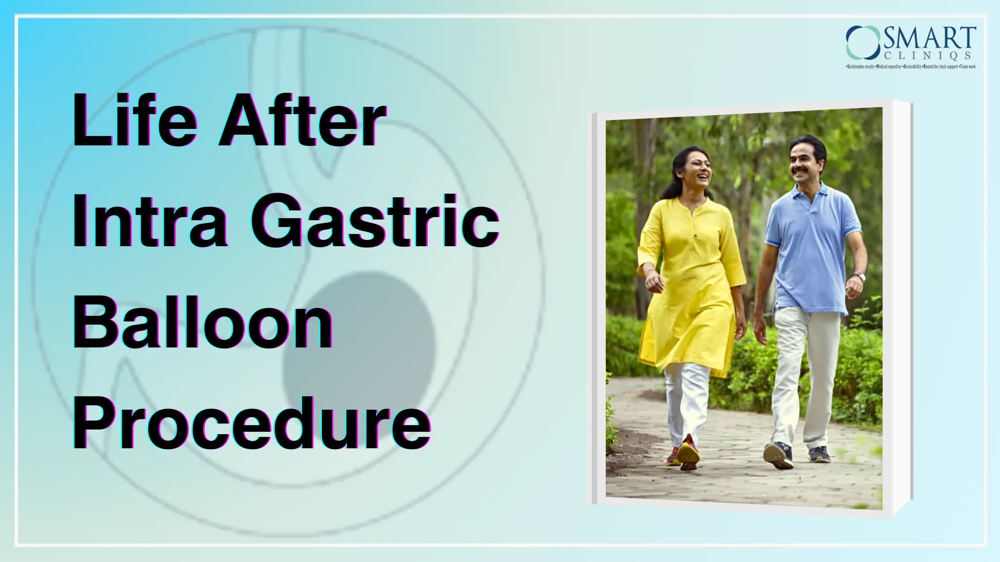

Life After Intragastric Balloon Procedure: Maintaining Your Weight Loss Success
Intragastric balloon therapy is a non-surgical weight management option that involves placing a temporary, saline-filled device in your stomach through an endoscope. By occupying space, the balloon helps you feel fuller sooner, reducing your overall food intake.
This procedure can be a viable choice if you've struggled to achieve your weight goals through diet and exercise alone.
Intragastric balloon procedures typically result in weight loss of 5-15 kilograms, but individual outcomes can vary based on factors such as initial weight, commitment to a healthy lifestyle, balloon type, and metabolic rate. These procedures are generally intended for individuals without any underlying health conditions.
However, it's important to remember that sustained weight loss requires a holistic approach. Adopting lasting healthy habits, such as nourishing your body with balanced meals and engaging in regular physical activity, is crucial for long-term success.
Understanding the Intragastric Balloon Procedure
Since the beginning of the 1980s, the global prevalence of obesity has substantially increased. An approximate one in three adults is categorized as overweight or obese, equating to greater than 1.4 billion adults. The soaring rates of obesity have triggered a parallel epidemic of associated health problems. These include hypertension, hyperlipidemia, cardiovascular disease, diabetes mellitus, orthopedic conditions, gastroesophageal reflux disease, metabolic dysfunction, psychiatric disorders, obstructive sleep apnea, non-alcoholic fatty liver disease, and cancers.
While bariatric surgery is considered the most effective treatment modality for morbid obesity, the eligibility criteria for these surgical interventions, such as Roux-en-Y gastric bypass, duodenal switch, and laparoscopic sleeve gastrectomy, are clearly defined. Patients must typically exhibit a body mass index (BMI) surpassing 25 kg/m² to qualify as candidates for surgery.
Intragastric balloon therapy is a less invasive but temporary weight management solution compared to the more comprehensive and lasting effects of bariatric surgery. However, it’s essential to emphasize that, like any weight management intervention, long-term success hinges on consistent lifestyle modifications.
Intra-gastric balloon treatment offers flexible options for weight management
- Standard duration: The balloon typically remains in place for around 6 months.
- Refill: Some types of balloons can be refilled to extend their duration, often up to a year.
- Customization: Treatment plans and the size of the balloon can be tailored to individual needs.
- Reversible: It refers to the ability to remove the device once its intended purpose has been achieved. The primary method for removing an IGB is through endoscopy.
Immediate Post-Procedure Care
Effective intragastric balloon procedure requires a programmatic approach. Before the procedure, patients should collaborate with a nutritionist to develop a tailored meal plan. A multidisciplinary team, including your surgeon, will provide ongoing care for up to a year, encompassing the balloon placement and post-removal periods.
Failing to remove an intragastric balloon after its prescribed duration can have serious health consequences.
Potential complications include:
- Balloon migration: The balloon may shift from the stomach into the intestines, causing a blockage that can lead to severe abdominal pain, vomiting, and the need for urgent surgery.
- Infection: Prolonged balloon placement can increase the risk of infection.
- Gastric ulcers: The balloon may irritate the stomach lining, raising the risk of developing ulcers.
- Weight regain: The benefits of the balloon may decrease over time, and individuals may regain weight if it's not removed as scheduled.
It's essential to adhere to your healthcare provider's instructions regarding balloon removal to avoid these complications.
Consistent exercise and dietary adherence are crucial throughout the process.
To minimize discomfort, patients typically follow a liquid diet for the first week, transitioning to soft foods in the second week, and gradually reintroducing solid foods, thereafter.
Dietary Adjustments and Nutrition
Intragastric ballooning is known to help one lose between 5 and 15 kilograms over six months to a year. By occupying space in your stomach, the balloon helps you feel fuller sooner, reducing cravings and portion sizes.
The process involves several stages:
- Initial weeks: After the procedure, you'll transition from clear fluids to pureed foods, then soft foods, before gradually returning to a normal diet. This takes about four weeks, but recovery times vary.
- Diet: During the first week, stick to clear fluids, avoiding straws and carbonated drinks. Gradually increase fluid intake to ten cups daily, including dairy for essential nutrients.
- Progression: As you recover, incorporate pureed foods like khichdi and porridge into your diet. Chew slowly and stop eating when full. In the third week, you can start soft foods. After four weeks, you can gradually return to normal eating but remember to eat slowly, in small portions, and increase physical activity like walking. This procedure requires patience and discipline. By combining the balloon with a healthy diet and regular exercise, you can achieve significant weight loss and improve overall health.
Incorporating Physical Activity
You might be eager to get back to your regular workout routine after receiving a gastric balloon. While it’s possible to resume exercise sooner than you might expect, it's important to listen to your body and progress gradually.
To allow your body to adjust to the changes in food and fluid intake, it’s recommended to avoid strenuous physical activities such as sports for approximately one to two weeks post-procedure.
During this initial period, gentle activities like leisure walking while staying well-hydrated are encouraged.
Once you’ve acclimated to the balloon and the first week has passed, you can gradually increase the intensity and duration of your physical activities. Choosing enjoyable exercises can help you stay motivated. Remember to start slowly and listen to your body’s signals.
Your healthcare team can provide personalized guidance based on your specific circumstance and recovery. By working together, you can develop an exercise plan that supports your weight loss goals and overall well-being.
Psychological and Emotional Support
The psychological dimensions of weight loss are often overlooked. For individuals undergoing intragastric balloon therapy, emotional well-being significantly impacts weight loss maintenance.
Initially, intragastric balloon therapy can boost self-confidence dramatically as patients experience physical transformations. This newfound positivity often fuels motivation for sustained lifestyle changes. However, the weight loss journey remains challenging, requiring emotional resilience to overcome obstacles.
The journey post-procedure requires both, physical as well as, emotional fortitude. A supportive environment, fostered by positive feedback and encouragement, can further enhance the emotional benefits of intragastric balloon therapy. The interplay between physical and psychological factors underscores the importance of a holistic approach to weight management.
Ultimately, intragastric balloon therapy can be a catalyst for broader personal growth and improved quality of life.
Regular Monitoring and Follow-Up
Regular check-ups are essential after Intragastric Balloon (IGB) placement. These visits allow your healthcare team to monitor your progress, address any concerns, and ensure your overall well-being.
During these appointments, you will undergo assessments to evaluate:
- Physical health, including weight loss, any side effects experienced, and overall physical condition.
- Nutritional status, to ensure you are getting the necessary nutrients.
- Psychological well-being, as emotional factors play a significant role in weight management.
It's important to be open and honest with your healthcare provider about any symptoms or challenges you may be facing. This information helps them provide the best possible care and support.
Conclusion: Your Journey to Lasting Success
Obesity is a complex metabolic disorder with numerous associated health problems. Effective and safe weight management options have been in high demand. The intragastric balloon offers a promising intermediate treatment between medical therapy and surgical intervention for obesity. Compared to medical treatments, it may provide superior outcomes while carrying a lower risk profile.
Additionally, the intragastric balloon can serve as a valuable initial treatment for high-risk obese individuals who will eventually require surgery. By improving weight loss and overall health, it can help reduce the risks associated with surgical procedures.
References:
- https://www.mayoclinic.org/tests-procedures/intragastric-balloon/about/pac-20394435#:~:text=Intragastric%20balloon%20placement%20is%20a,that%20does%20not%20require%20surgery.
- https://www.ncbi.nlm.nih.gov/books/NBK578184/
- https://www.atulpeters.com/blog/diet-after-intra-gastric-ballooning/
- https://lsdc.uk/exercising-with-a-temporary-gastric-balloon/#:~:text=It's%20recommended%20that%20you%20avoid,you%20can%20start%20leisure%20walking.
- https://obesity-care-clinic.com/weight-loss-medical-solutions/gastric-balloon/gastric-balloons-and-emotional-well-being-a-winning-combination
- https://www.ncbi.nlm.nih.gov/pmc/articles/PMC9416269/
- https://www.atulpeters.com/success-stories
- https://www.ncbi.nlm.nih.gov/pmc/articles/PMC4917609/